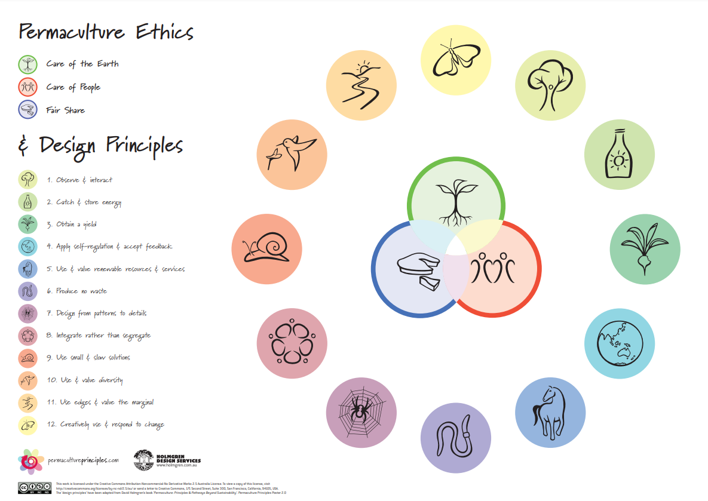
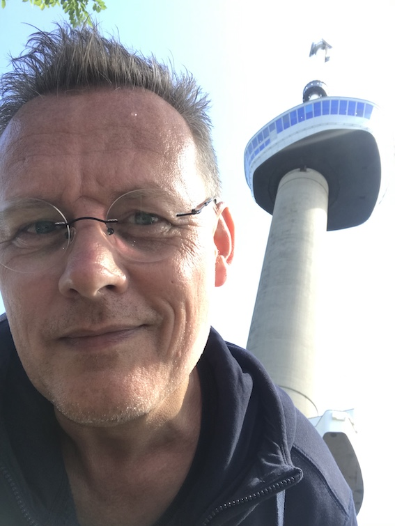
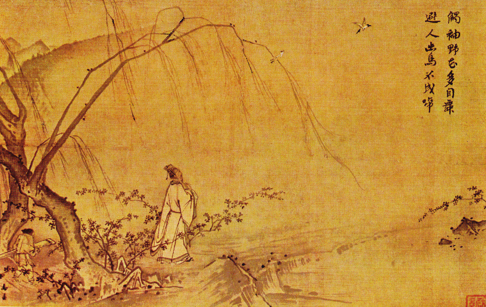

About this website
- Inspired by both Tickfoot and Devine Lu Linvega, I wanted to create a website that will serve as a growing reflection of my actions. The intention is that it will keep growing without losing simplicity and remaining transparent. (#lifegoals, haha) Another characteristic is that it should be presented in as simple a manner as possible. I've considered gemtext but instead decided on plain and simple html. I crafted this manually, using the structure provided by Tickfoot. This means it is slow work, but maybe, hopefully, more valuable. For me many things that take time to do are more valuable, like sourdough, or fermentation or slow cooking or manual labour.
About me
I would describe myself as a romantic. Soft-hearted, sometimes light-headed. I try to remember to ask myself if what I want to say is true, kind and neccessary. But sometimes I forget… I'm also a nerd. I live in Emacs, I sometimes try my hand at Lisp code. I love to start a new Linux install on a partition or in a virtual machine. I never stay there, always returning to my Mac. I love my family without whom I would not be who I am now. /\ I also love going to our allotment garden to work and enjoy the sounds of the many birds, or the wind. And then there's the wonder of the path of life. The secrets to breath, suffering, love, purpose, spirit, letting go and all the things that cannot be named. I happily walk on.

Who will walk with me on this path?

Work in progress… stay tuned